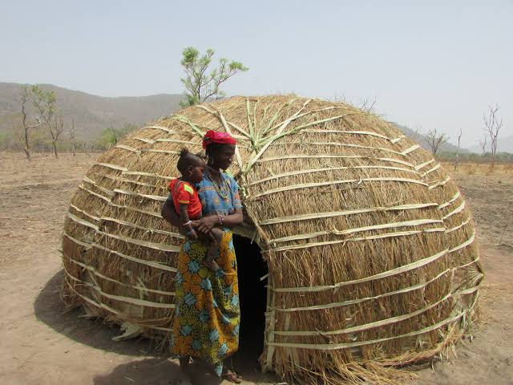

Ngondo Festival
The Ngondo Festival is the most important cultural celebration of the Sawa people. It features canoe races, traditional dances, wrestling, music and spiritual ceremonies along the Wouri River.
Learn More
Nguon Festival
Celebrated by the Bamoun people, the Nguon Festival honors the Sultan and showcases royal traditions, horse parades, dances and cultural performances.
Learn More
Bamoun Kingdom
The Bamoun Kingdom is famous for its royal palace, rich history, traditional architecture, arts, bronze casting and centuries-old customs.
Learn More
Bamiléké Traditional Dance
Bamiléké dances are colourful cultural performances accompanied by drums, masks, raffia costumes and energetic movements during ceremonies and festivals.
Learn More
Sawa Culture
The Sawa people are known for their fishing traditions, colourful festivals, hospitality, music and unique cultural ceremonies celebrated along the coast.
Learn More
Fulani Culture
The Fulani are renowned for cattle rearing, colourful clothing, horse riding, music and beautiful traditional architecture.
Learn More
Kom Cultural Heritage
The Kom people preserve traditional leadership, masquerades, sacred forests and annual festivals that attract many visitors.
Learn More
Tikar Culture
The Tikar people are recognized for their traditional dances, storytelling, wood carving, music and rich oral history.
Learn More
Bakweri Culture
The Bakweri people, who live around Mount Cameroon, are known for traditional dances, folklore, farming practices and colourful annual cultural celebrations.
Learn More
Baka (Forest People)
The Baka people are among the oldest forest communities in Central Africa. Their traditions include hunting, forest knowledge, singing and unique musical instruments.
Learn More
Bamenda Grassfields Culture
The Grassfields are famous for traditional palaces, elaborate festivals, carved stools, beadwork and strong chieftaincy institutions.
Learn More
Traditional Marriage
Traditional marriages vary across Cameroon but usually involve family blessings, cultural attire, music, dancing and symbolic exchange of gifts.
Learn More
Traditional Music
Cameroonian traditional music combines drums, xylophones, flutes and songs that accompany ceremonies, dances and festivals.
Learn More
Traditional Masks
Wooden masks symbolize leadership, ancestors and spirituality. They are worn during festivals, initiation ceremonies and royal events.
Learn More
Arts & Handicrafts
Cameroon is renowned for wood carvings, woven baskets, pottery, bronze works, beadwork and colourful fabrics that reflect the country's rich artistic heritage.
Learn More